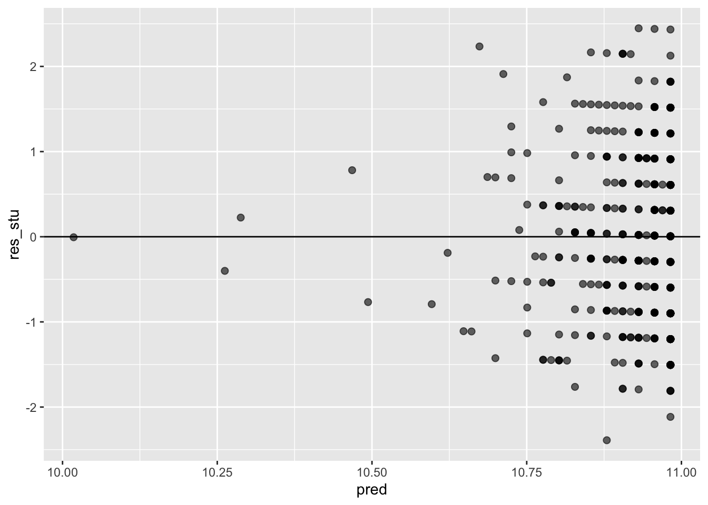
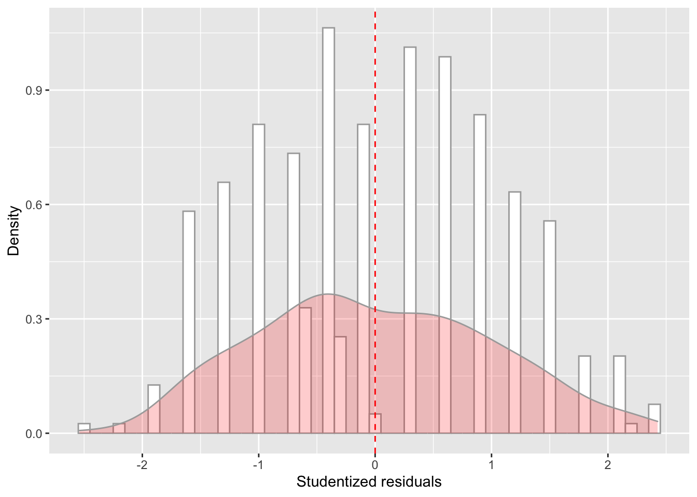

In this WPA, you will analyze data from a study on student performance in two classes: math and Portugese. These data come from the UCI Machine Learning database at http://archive.ics.uci.edu/ml/datasets/Student+Performance#
A1. Download the data from the website (by clicking on Data Folder, and unzipping the downloaded student folder on your computer). We are going to use one of the files contained in the student folder: student-mat.csv. Load it in R as student_math. Inspect the dataset first.
library(tidyverse)
student_math = read_csv2('data/student-mat.csv')## ℹ Using "','" as decimal and "'.'" as grouping mark. Use `read_delim()` for more control.##
## ── Column specification ────────────────────────────────────────────────────────
## cols(
## .default = col_character(),
## age = col_double(),
## Medu = col_double(),
## Fedu = col_double(),
## traveltime = col_double(),
## studytime = col_double(),
## failures = col_double(),
## famrel = col_double(),
## freetime = col_double(),
## goout = col_double(),
## Dalc = col_double(),
## Walc = col_double(),
## health = col_double(),
## absences = col_double(),
## G1 = col_double(),
## G2 = col_double(),
## G3 = col_double()
## )
## ℹ Use `spec()` for the full column specifications.glimpse(student_math)## Rows: 395
## Columns: 33
## $ school <chr> "GP", "GP", "GP", "GP", "GP", "GP", "GP", "GP", "GP", "GP",…
## $ sex <chr> "F", "F", "F", "F", "F", "M", "M", "F", "M", "M", "F", "F",…
## $ age <dbl> 18, 17, 15, 15, 16, 16, 16, 17, 15, 15, 15, 15, 15, 15, 15,…
## $ address <chr> "U", "U", "U", "U", "U", "U", "U", "U", "U", "U", "U", "U",…
## $ famsize <chr> "GT3", "GT3", "LE3", "GT3", "GT3", "LE3", "LE3", "GT3", "LE…
## $ Pstatus <chr> "A", "T", "T", "T", "T", "T", "T", "A", "A", "T", "T", "T",…
## $ Medu <dbl> 4, 1, 1, 4, 3, 4, 2, 4, 3, 3, 4, 2, 4, 4, 2, 4, 4, 3, 3, 4,…
## $ Fedu <dbl> 4, 1, 1, 2, 3, 3, 2, 4, 2, 4, 4, 1, 4, 3, 2, 4, 4, 3, 2, 3,…
## $ Mjob <chr> "at_home", "at_home", "at_home", "health", "other", "servic…
## $ Fjob <chr> "teacher", "other", "other", "services", "other", "other", …
## $ reason <chr> "course", "course", "other", "home", "home", "reputation", …
## $ guardian <chr> "mother", "father", "mother", "mother", "father", "mother",…
## $ traveltime <dbl> 2, 1, 1, 1, 1, 1, 1, 2, 1, 1, 1, 3, 1, 2, 1, 1, 1, 3, 1, 1,…
## $ studytime <dbl> 2, 2, 2, 3, 2, 2, 2, 2, 2, 2, 2, 3, 1, 2, 3, 1, 3, 2, 1, 1,…
## $ failures <dbl> 0, 0, 3, 0, 0, 0, 0, 0, 0, 0, 0, 0, 0, 0, 0, 0, 0, 0, 3, 0,…
## $ schoolsup <chr> "yes", "no", "yes", "no", "no", "no", "no", "yes", "no", "n…
## $ famsup <chr> "no", "yes", "no", "yes", "yes", "yes", "no", "yes", "yes",…
## $ paid <chr> "no", "no", "yes", "yes", "yes", "yes", "no", "no", "yes", …
## $ activities <chr> "no", "no", "no", "yes", "no", "yes", "no", "no", "no", "ye…
## $ nursery <chr> "yes", "no", "yes", "yes", "yes", "yes", "yes", "yes", "yes…
## $ higher <chr> "yes", "yes", "yes", "yes", "yes", "yes", "yes", "yes", "ye…
## $ internet <chr> "no", "yes", "yes", "yes", "no", "yes", "yes", "no", "yes",…
## $ romantic <chr> "no", "no", "no", "yes", "no", "no", "no", "no", "no", "no"…
## $ famrel <dbl> 4, 5, 4, 3, 4, 5, 4, 4, 4, 5, 3, 5, 4, 5, 4, 4, 3, 5, 5, 3,…
## $ freetime <dbl> 3, 3, 3, 2, 3, 4, 4, 1, 2, 5, 3, 2, 3, 4, 5, 4, 2, 3, 5, 1,…
## $ goout <dbl> 4, 3, 2, 2, 2, 2, 4, 4, 2, 1, 3, 2, 3, 3, 2, 4, 3, 2, 5, 3,…
## $ Dalc <dbl> 1, 1, 2, 1, 1, 1, 1, 1, 1, 1, 1, 1, 1, 1, 1, 1, 1, 1, 2, 1,…
## $ Walc <dbl> 1, 1, 3, 1, 2, 2, 1, 1, 1, 1, 2, 1, 3, 2, 1, 2, 2, 1, 4, 3,…
## $ health <dbl> 3, 3, 3, 5, 5, 5, 3, 1, 1, 5, 2, 4, 5, 3, 3, 2, 2, 4, 5, 5,…
## $ absences <dbl> 6, 4, 10, 2, 4, 10, 0, 6, 0, 0, 0, 4, 2, 2, 0, 4, 6, 4, 16,…
## $ G1 <dbl> 5, 5, 7, 15, 6, 15, 12, 6, 16, 14, 10, 10, 14, 10, 14, 14, …
## $ G2 <dbl> 6, 5, 8, 14, 10, 15, 12, 5, 18, 15, 8, 12, 14, 10, 16, 14, …
## $ G3 <dbl> 6, 6, 10, 15, 10, 15, 11, 6, 19, 15, 9, 12, 14, 11, 16, 14,…head(student_math)## # A tibble: 6 x 33
## school sex age address famsize Pstatus Medu Fedu Mjob Fjob reason
## <chr> <chr> <dbl> <chr> <chr> <chr> <dbl> <dbl> <chr> <chr> <chr>
## 1 GP F 18 U GT3 A 4 4 at_home teacher course
## 2 GP F 17 U GT3 T 1 1 at_home other course
## 3 GP F 15 U LE3 T 1 1 at_home other other
## 4 GP F 15 U GT3 T 4 2 health services home
## 5 GP F 16 U GT3 T 3 3 other other home
## 6 GP M 16 U LE3 T 4 3 services other reput…
## # … with 22 more variables: guardian <chr>, traveltime <dbl>, studytime <dbl>,
## # failures <dbl>, schoolsup <chr>, famsup <chr>, paid <chr>,
## # activities <chr>, nursery <chr>, higher <chr>, internet <chr>,
## # romantic <chr>, famrel <dbl>, freetime <dbl>, goout <dbl>, Dalc <dbl>,
## # Walc <dbl>, health <dbl>, absences <dbl>, G1 <dbl>, G2 <dbl>, G3 <dbl>A2. Create a regression object called model_fit_math_1 predicting first period grade (G1) based on age. How do you interpret the relationship between age and first period grade? Respond in terms of both model parameters fit and overall model fit. Were the model assumption violated? Respond using the plots we have seen in class. Finally, make a scatterplot with the regression line to illustrate such relationship as we have seen in previous assignments.
model_fit_math_1 = lm(G1 ~ age, data = student_math)
summary(model_fit_math_1)##
## Call:
## lm(formula = G1 ~ age, data = student_math)
##
## Residuals:
## Min 1Q Median 3Q Max
## -7.6915 -2.7749 -0.1916 2.3085 8.3085
##
## Coefficients:
## Estimate Std. Error t value Pr(>|t|)
## (Intercept) 13.6919 2.1926 6.245 1.1e-09 ***
## age -0.1667 0.1309 -1.273 0.204
## ---
## Signif. codes: 0 '***' 0.001 '**' 0.01 '*' 0.05 '.' 0.1 ' ' 1
##
## Residual standard error: 3.317 on 393 degrees of freedom
## Multiple R-squared: 0.004106, Adjusted R-squared: 0.001572
## F-statistic: 1.62 on 1 and 393 DF, p-value: 0.2038# looks like there is no relationship with age
# the age coefficient is not significant, as well as the F-test, meaning that the intercept model is better than the intercept+age modelggplot(data = student_math, mapping = aes(x = age, y = G1)) +
geom_point(alpha = 0.8, size= 1) +
geom_smooth(method = lm, color='red')## `geom_smooth()` using formula 'y ~ x'# Obtain standardised residuals:
res_stu = rstudent(model = model_fit_math_1)
# Obtain model's predictions:
pred = model_fit_math_1$fitted.values
model_checks = data.frame(pred = pred, res_stu = res_stu)
model_checks = as_tibble(model_checks)ggplot(data = model_checks, mapping = aes(x = res_stu)) +
geom_histogram(aes(y=..density..), binwidth=.1, colour="darkgrey", fill="white") + # Note: add aes(y=..density..) to have density instead of frequencies
labs(x = 'Studentized residuals', y='Density') +
geom_density(alpha=.2, fill="red", colour="darkgrey") + # Overlay with transparent density plot
geom_vline(aes(xintercept=mean(res_stu)), color="red", linetype="dashed", size=.5) # Add mean residualsggplot(model_checks, mapping = aes(sample = res_stu)) +
stat_qq() +
stat_qq_line()ggplot(data = model_checks, mapping = aes(x = pred, y = res_stu)) +
geom_point(alpha = 0.6, size= 2) +
geom_hline(yintercept=0)You can also use a more formal test for normality:
shapiro.test(model_checks$res_stu)##
## Shapiro-Wilk normality test
##
## data: model_checks$res_stu
## W = 0.98114, p-value = 4.999e-05This test shows that we can reject the null hypothesis that the residuals came from a normal distribution.
See here for more info.
And you can also use a more formal test for heteroskedacity:
#install.packages('lmtest')
#install.packages('zoo')
library(lmtest)## Warning: package 'lmtest' was built under R version 4.0.5## Loading required package: zoo##
## Attaching package: 'zoo'## The following objects are masked from 'package:base':
##
## as.Date, as.Date.numericbptest(model_fit_math_1)##
## studentized Breusch-Pagan test
##
## data: model_fit_math_1
## BP = 0.37268, df = 1, p-value = 0.5415This test shows that we cannot reject the null that the variance of the residuals is constant, thus heteroskedacity is not present.
See here for more info.
A3. Create a regression object called model_fit_math_2 predicting first period grade (G1) based on absences. How do you interpret the relationship between absences and G1? Respond in terms of both model parameters fit and overall model fit. Were the model assumption violated? Respond using the plots we have seen in class. Finally, make a scatterplot with the regression line to illustrate such relationship as we have seen in previous assignments.
model_fit_math_2 = lm(G1 ~ absences, data = student_math)
summary(model_fit_math_2)##
## Call:
## lm(formula = G1 ~ absences, data = student_math)
##
## Residuals:
## Min 1Q Median 3Q Max
## -7.8794 -2.9115 0.0177 2.2363 8.0692
##
## Coefficients:
## Estimate Std. Error t value Pr(>|t|)
## (Intercept) 10.98227 0.20539 53.470 <2e-16 ***
## absences -0.01286 0.02091 -0.615 0.539
## ---
## Signif. codes: 0 '***' 0.001 '**' 0.01 '*' 0.05 '.' 0.1 ' ' 1
##
## Residual standard error: 3.322 on 393 degrees of freedom
## Multiple R-squared: 0.0009612, Adjusted R-squared: -0.001581
## F-statistic: 0.3781 on 1 and 393 DF, p-value: 0.539# looks like there is no relationship with absences
# the absences coefficient is not significant, as well as the F-test, meaning that the intercept model is better than the intercept+absences modelggplot(data = student_math, mapping = aes(x = absences, y = G1)) +
geom_point(alpha = 0.8, size= 1) +
geom_smooth(method = lm, color='red')## `geom_smooth()` using formula 'y ~ x'# Obtain standardised residuals:
res_stu = rstudent(model = model_fit_math_2)
# Obtain model's predictions:
pred = model_fit_math_2$fitted.values
model_checks = data.frame(pred = pred, res_stu = res_stu)
model_checks = as_tibble(model_checks)ggplot(data = model_checks, mapping = aes(x = res_stu)) +
geom_histogram(aes(y=..density..), binwidth=.1, colour="darkgrey", fill="white") + # Note: add aes(y=..density..) to have density instead of frequencies
labs(x = 'Studentized residuals', y='Density') +
geom_density(alpha=.2, fill="red", colour="darkgrey") + # Overlay with transparent density plot
geom_vline(aes(xintercept=mean(res_stu)), color="red", linetype="dashed", size=.5) # Add mean residualsggplot(model_checks, mapping = aes(sample = res_stu)) +
stat_qq() +
stat_qq_line()ggplot(data = model_checks, mapping = aes(x = pred, y = res_stu)) +
geom_point(alpha = 0.6, size= 2) +
geom_hline(yintercept=0)
shapiro.test(model_checks$res_stu)##
## Shapiro-Wilk normality test
##
## data: model_checks$res_stu
## W = 0.97877, p-value = 1.512e-05bptest(model_fit_math_2)##
## studentized Breusch-Pagan test
##
## data: model_fit_math_2
## BP = 1.4807, df = 1, p-value = 0.2237A4. Create a regression object called model_fit_math_3 predicting first period grade (G1) based on school support. How do you interpret the relationship between school support and G1? Respond in terms of both model parameters fit and overall model fit. Were the model assumption violated? Respond using the plots we have seen in class. Finally, make a scatterplot with the regression line to illustrate such relationship as we have seen in previous assignments.
model_fit_math_3 = lm(G1 ~ schoolsup, data = student_math)
summary(model_fit_math_3)##
## Call:
## lm(formula = G1 ~ schoolsup, data = student_math)
##
## Residuals:
## Min 1Q Median 3Q Max
## -8.1802 -2.1802 -0.1802 2.8198 7.8198
##
## Coefficients:
## Estimate Std. Error t value Pr(>|t|)
## (Intercept) 11.1802 0.1751 63.854 < 2e-16 ***
## schoolsupyes -2.1018 0.4873 -4.313 2.04e-05 ***
## ---
## Signif. codes: 0 '***' 0.001 '**' 0.01 '*' 0.05 '.' 0.1 ' ' 1
##
## Residual standard error: 3.247 on 393 degrees of freedom
## Multiple R-squared: 0.0452, Adjusted R-squared: 0.04277
## F-statistic: 18.61 on 1 and 393 DF, p-value: 2.036e-05# looks like there is a relationship with absences
# the absences coefficient is significant, as well as the F-test, meaning that the schoolsup+intercept model is better than the intercept modelstudent_math = mutate(student_math,
schoolsup_bin = recode(schoolsup, "yes" = 1, "no" = 0))distinct(student_math, schoolsup, schoolsup_bin)## # A tibble: 2 x 2
## schoolsup schoolsup_bin
## <chr> <dbl>
## 1 yes 1
## 2 no 0# To make the plot "work" I created the dummy variable schoolsup_bin
ggplot(data = student_math, mapping = aes(x = schoolsup_bin, y = G1)) +
geom_point(alpha = 0.8, size= 1) +
geom_smooth(method = lm, color='red')## `geom_smooth()` using formula 'y ~ x'# Note that the result is the same using the dummy variable:
model_fit_math_3 = lm(G1 ~ schoolsup_bin, data = student_math)
summary(model_fit_math_3)##
## Call:
## lm(formula = G1 ~ schoolsup_bin, data = student_math)
##
## Residuals:
## Min 1Q Median 3Q Max
## -8.1802 -2.1802 -0.1802 2.8198 7.8198
##
## Coefficients:
## Estimate Std. Error t value Pr(>|t|)
## (Intercept) 11.1802 0.1751 63.854 < 2e-16 ***
## schoolsup_bin -2.1018 0.4873 -4.313 2.04e-05 ***
## ---
## Signif. codes: 0 '***' 0.001 '**' 0.01 '*' 0.05 '.' 0.1 ' ' 1
##
## Residual standard error: 3.247 on 393 degrees of freedom
## Multiple R-squared: 0.0452, Adjusted R-squared: 0.04277
## F-statistic: 18.61 on 1 and 393 DF, p-value: 2.036e-05# Obtain standardised residuals:
res_stu = rstudent(model = model_fit_math_3)
# Obtain model's predictions:
pred = model_fit_math_3$fitted.values
model_checks = data.frame(pred = pred, res_stu = res_stu)
model_checks = as_tibble(model_checks)ggplot(data = model_checks, mapping = aes(x = res_stu)) +
geom_histogram(aes(y=..density..), binwidth=.1, colour="darkgrey", fill="white") + # Note: add aes(y=..density..) to have density instead of frequencies
labs(x = 'Studentized residuals', y='Density') +
geom_density(alpha=.2, fill="red", colour="darkgrey") + # Overlay with transparent density plot
geom_vline(aes(xintercept=mean(res_stu)), color="red", linetype="dashed", size=.5) # Add mean residuals
ggplot(model_checks, mapping = aes(sample = res_stu)) +
stat_qq() +
stat_qq_line()ggplot(data = model_checks, mapping = aes(x = pred, y = res_stu)) +
geom_point(alpha = 0.6, size= 2) +
geom_hline(yintercept=0)shapiro.test(model_checks$res_stu)##
## Shapiro-Wilk normality test
##
## data: model_checks$res_stu
## W = 0.98203, p-value = 7.983e-05bptest(model_fit_math_3)##
## studentized Breusch-Pagan test
##
## data: model_fit_math_3
## BP = 10.851, df = 1, p-value = 0.0009873They are both significant: both assumptions have been violated.
A5. Given that school support is a nominal variable with 2 levels, how can you tell from the output which direction the effect is? How does this relate to the way the dataset has stored the levels of the school support factor?
There is a negative relationship between school support and first period grade (b = -2.1): Students with extra support from the school have worse Period 1 grades on average.
In the regression, rather than a predictor labelled schoolsup because it is a nominal variable we are given the variable schoolsupyes. This tells us that the regression coefficient is the change in grade caused by going from no school support to yes school support. In essence, R has dummy coded the variable so that students with no school support are given a value of 0 and those with yes school support a value of 1.
If we look at the factor levels for the school support column we see that no is level 1 and yes level two. ‘lm()’ will always code predictors as the change from level 1 to level 2 (i.e. level 1 is coded as 0, and level 2 as 1).")
levels(factor(student_math$schoolsup))## [1] "no" "yes"A6. From the regression, what would be your best guess for the first period grade for a student with no school support? What about for a student with school support?
The intercept estimate tells us the best estimate for first period grade when all predictor vairables have a value of 0.
In this case, we only have 1 predictor (school support) and it is dummy coded so that those without school support have a value of 0.
Therefore, the predicted first period grade for those without school support is 11.18 (the intercept estimate).
We can also use our schoolsupportyes estimate to calculate our prediction for those with school support: Our estimate tells us that those on school support are predicted to have a first period grade that is 2.1 lower than those without school support, therefore they have a predicted grade of 9.08.
Because we have a single categorical predictor, these predicted scores should also be the mean of each of the groups:
summarize(group_by(student_math, schoolsup),
mean_G1 = mean(G1))## # A tibble: 2 x 2
## schoolsup mean_G1
## <chr> <dbl>
## 1 no 11.2
## 2 yes 9.08